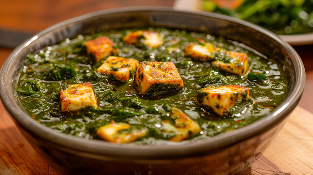

Palak Paneer

Description
Palak paneer is a vegetarian dish originating from the Indian subcontinent. It is widely popular in the Indian subcontinent as well as in the Western world. It is made with spinach, paneer (Indian cottage cheese), tomatoes, onions, and a mix of spices. It is a popular dish in Indian restaurants and households.
Ingredients
- 2 cups chopped spinach
- 200g paneer, cubed
- 2 tomatoes, chopped
- 1 onion, chopped
- 2 cloves garlic, minced
- 1 inch ginger, grated
- 2 green chilies, chopped
- 1 tsp cumin seeds
- 1 tsp coriander powder
- 1 tsp garam masala
- 1 tsp turmeric powder
- Salt to taste
- 2 tbsp oil
- Fresh coriander leaves for garnish
Instructions
- Heat oil in a pan and add cumin seeds. When they start to splutter, add chopped onions, garlic, ginger, and green chilies. Saute until the onions turn golden brown.
- Add chopped tomatoes and cook until they turn mushy.
- Add chopped spinach and cook until it wilts.
- Add coriander powder, turmeric powder, garam masala, and salt. Mix well and cook for 2-3 minutes.
- Add cubed paneer and mix well. Add water if required to adjust the consistency.
- Cover and cook for 5-7 minutes on low heat.
- Garnish with fresh coriander leaves and serve hot with rice or roti.